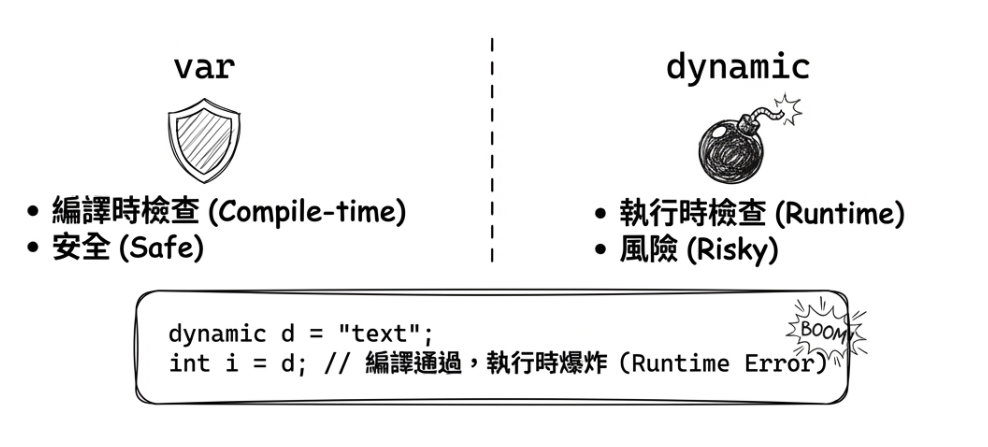
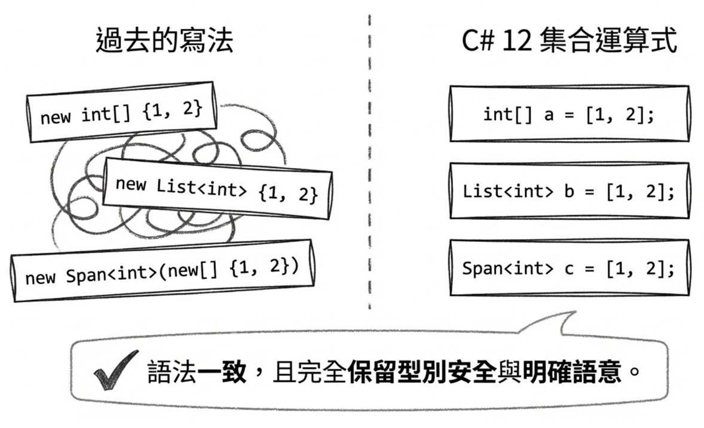
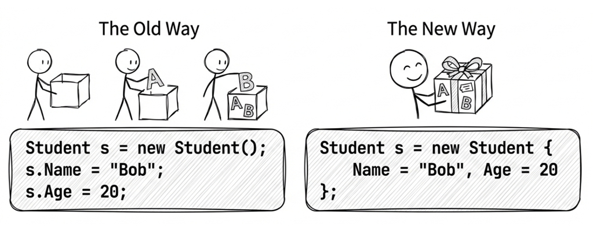
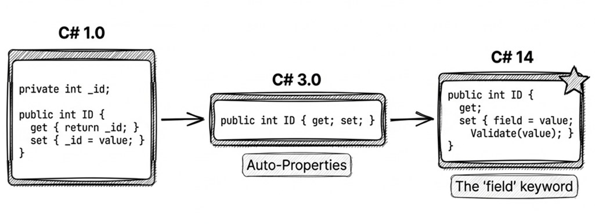
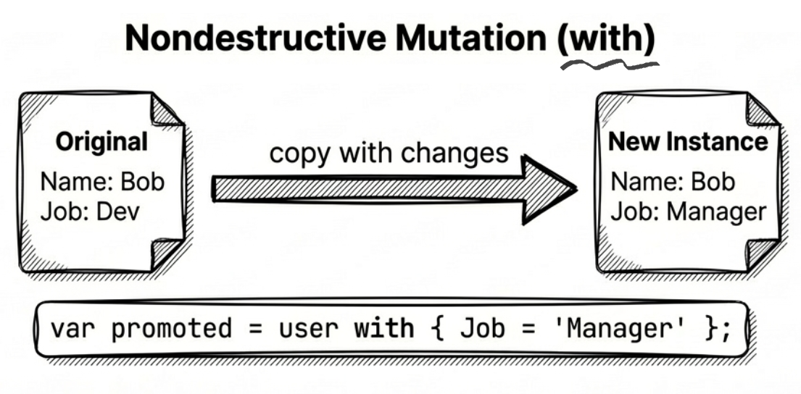
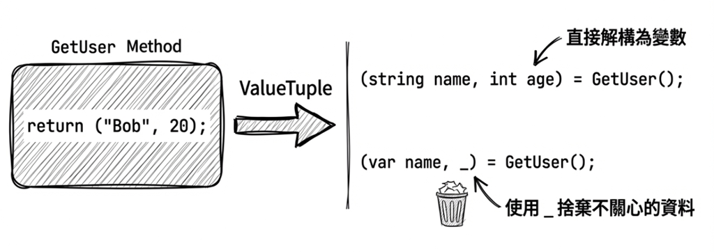

第 2 章：宣告與語法糖
現代 C# 提供了許多能讓程式碼更簡潔、更易讀的語法特性，其中有些可歸類為「語法糖」（syntactic sugar），有些則不只是語法上的簡寫，而會影響編譯器如何理解與產生程式碼。掌握這些特性，是從「寫出會動的程式碼」進化到「寫出專業程式碼」的關鍵一步。
本章將介紹幾個常用的語法特性：var 隱含型別、dynamic 動態型別、集合運算式、物件初始設定式、自動實作屬性、匿名型別、字串插補，以及 Tuple 與解構。
2.1 使用 var 宣告隱含型別
C# 3.0 引入了 var 關鍵字，讓編譯器自動推斷變數型別。
這就像是一個透明的收納箱。你不需要在箱子外面貼上「蘋果」的標籤（明確宣告型別），因為一眼就能看到裡面裝的是蘋果（編譯器能從右邊的初始值推斷出來）。先看一個最基本的例子：
這兩行程式碼完全等價，連編譯出來的 IL 代碼都一模一樣。
型別推斷的運作方式
編譯器是透過等號右側的初始運算式（initialization expression）來推斷型別。下面的範例也示範了 foreach 中的 var 如何跟著陣列元素型別一起被推斷：
這裡的 new[] 寫法稱為隱含型別陣列建立（implicitly typed array creation），其原理是：編譯器會檢查所有元素的型別，以推斷出陣列的型別（詳見稍後的「型別推斷的陷阱」一節）。
Note
C# 12 引入了一個稱為 集合運算式（Collection Expressions） 的語法，可把
new[] { 1, 2, 3 }這類寫法改寫得更一致。剛才範例中的
var numbers = new[] { 1, 2, 3 };，若改用集合運算式，會變成：
int[] numbers = [1, 2, 3];注意：
[...]語法不能搭配var使用，因為編譯器需要知道目標型別才能決定要建立哪種集合（例如 Array、List、Span…等等）。稍後在本章 2.3 節會專門介紹集合運算式與展開（spread）語法；第 13 章則會從效能角度補充它在
Span<T>場景下的配置行為。
var 的限制
- 必須有初始值：編譯器需要初始值才能推斷型別。
- 只能用於區域變數：不能用於類別成員或一般方法的參數。
- 一次只能宣告一個變數：如以下範例的寫法，是不能通過編譯的。
var i = 10, j = 20; // ✗ 編譯失敗！雖然 var 不能用於一般方法的參數，但是可以用在 lambda 運算式的參數，像這樣：
Func<int, int, int> add = (var x, var y) => x + y;這個語法主要在需要為 lambda 參數加上修飾屬性（attribute）時才有實際用途，例如 ([NotNull] var x, var y) => ...。若只是一般情況，直接寫出參數型別通常會更清楚。
Lambda 運算式的完整介紹，請參閱第 8 章〈委派與 Lambda 運算式〉。
型別推斷的陷阱
使用 var 時要特別注意陣列型別的推斷。編譯器會尋找所有元素都能隱含轉換的最佳共同型別：
最佳實務
- 對於陣列初始化，如果元素型別混用，而且你希望明確控制結果型別，建議把型別寫出來：
// ✓ 明確指定為 double[]
double[] values = new[] { 1, 2.5, 3 };- 對於複雜的 LINQ 查詢結果，
var幾乎是必須的：
何時該用 var？何時不該用？
✓ 適合使用的場景
- 右側型別顯而易見：
匿名型別：非用不可（稍後會介紹）
複雜的泛型：
// 以下場景是型別太長，寫出來反而干擾閱讀
var grouped = students.GroupBy(s => s.City);從這些例子可以看出，隱含型別在 LINQ 查詢和匿名型別的場景中特別實用，能有效提高程式碼的可讀性與簡潔性。
✗ 不建議使用的場景
原始碼： DemoVar
2.2 使用 dynamic 宣告動態型別
C# 4.0 引入了 dynamic 關鍵字，用於延遲型別檢查到執行時期。
var vs. dynamic
以下是使用 var 和 dynamic 的對比範例：
說明：
- 編譯時期的型別為
string，執行時期的型別也是string。 - 編譯時期的型別為
dynamic，執行時期的型別為string。 - 編譯時就會出錯：Cannot implicitly convert type
stringtoint。 - 執行時才會拋錯：Cannot implicitly convert type
stringtoint。
你可以把一個宣告為 dynamic 的變數指定給另一個宣告為 var 的變數。不過，混合使用 dynamic 和 var 變數時，有幾個細節值得留意：

dynamic 與 ExpandoObject
實務上，dynamic 經常會搭配 System.Dynamic.ExpandoObject 類別使用。ExpandoObject 的主要目的是提供一個動態的物件，你可以在執行時（runtime）加入、修改或刪除成員（屬性、方法、事件），而不需要在編譯時（compile-time）定義其結構。簡言之，它讓 C# 物件具備了類似 JavaScript 物件的靈活性。
以下範例示範如何在執行時替物件加入屬性，並把它傳給接受 dynamic 參數的方法：
說明：
dynamic obj = new ExpandoObject();：若後續要用obj.FirstName = ...這種動態成員語法，變數的編譯時期型別就必須是dynamic。如果改成var obj = new ExpandoObject();，雖然仍能編譯，但obj的編譯時期型別會變成ExpandoObject，後面的動態成員存取便無法通過編譯。obj.FirstName = "Bruce";和obj.LastName = "Wayne";：動態型別的物件，可加入任意屬性。
如果把建立 ExpandoObject 並設定屬性的那幾行改用匿名型別來寫，會變成這樣：
以上兩個範例在這個特定情境下都能得到相同的結果，因為 GetFullName 的參數型別是 dynamic，執行時期只要能找到 FirstName 和 LastName 成員即可。不過，匿名型別和 ExpandoObject 的能力並不相同：匿名型別的成員在建立後就固定了，而 ExpandoObject 則可以在執行時期自由增刪成員。
原始碼： DemoDynamic
dynamic 的陷阱與替代方案
使用 dynamic 雖然方便（例如與 COM 元件互動，或搭配 ExpandoObject／某些會回傳動態物件的函式庫時），但代價很高：
- 效能懲罰：動態繫結需要額外的 CPU 資源。
- 失去編譯檢查：打錯字（例如
Lenght）往往要等到執行時，並且程式剛好跑到那一行才會出錯。 - 重構困難：IDE 的「重新命名」功能通常無法正確更新動態物件的屬性名稱。
在現代 .NET 常見的 System.Text.Json 情境下，就算你寫成 JsonSerializer.Deserialize<dynamic>(json)，拿到的通常仍是 JsonElement，並不代表之後就能用 obj.Name 這種動態成員語法直接存取 JSON 欄位。這是因為 System.Text.Json 使用自己的物件模型（JsonElement），不透過 DLR（動態語言執行環境）運作，所以把型別宣告為 dynamic 對反序列化的結果型別沒有任何影響。
dynamic在 C# 中的存在，反映的是一個過渡期的妥協；隨著泛型、模式比對（pattern matching）、型別化序列化與工具鏈日漸成熟，現代 C# 更傾向「擁抱型別」，而非延後決定型別。因此，除非沒有更好的做法，否則建議盡量避免使用dynamic。
2.3 集合運算式（Collection Expressions）
C# 12 引入了集合運算式（Collection Expressions）之後，方括弧 [] 幾乎成了處理集合的首選語法。它不只是把程式碼寫得更短，更重要的是把陣列、List<T>、Span<T>、ReadOnlySpan<T> 這些常見集合的初始化方式統一起來，也讓編譯器更有空間做最佳化。
先記住一個核心觀念：右邊的 [...] 只是元素序列的寫法；真正決定結果型別的，是左邊或使用情境提供的目標型別（target type）。
例如，同樣寫成 [1, 2, 3]，在不同的目標型別脈絡下，可以表示 int[]、List<int>，也可以表示 Span<int>。
使用時機
本節整理集合運算式的幾個常見使用情境，包括：
- 初始化集合時
- 合併多個集合時
- 傳遞參數給方法時
- 需要空集合時
- 寫
Span<T>或ReadOnlySpan<T>的程式時
初始化集合
這是最直觀、也最常見的使用時機。過去初始化不同集合型別時，語法風格差很多；集合運算式把它們統一成同一種寫法。
以前：
使用集合運算式後，可以改成同一種形式：
你可以看到，使用集合運算式的時候，程式碼右邊的寫法相當一致。編譯器會依據左邊的目標型別決定要建立什麼集合。這也是集合運算式最大的價值之一：語法一致，但結果型別仍然保有型別安全與語意清楚的特性。

合併多個集合
如果你需要把多個集合拼成一個新的集合，集合運算式搭配 .. 展開（spread）語法很好用。它通常比 AddRange、Concat(...).ToArray() 或手動複製更直觀。
這裡的 .. section1 表示把 section1 內的元素逐一展開後放進新的集合運算式中。
Note
這裡的
..是集合運算式中的展開語法；它和第 6 章清單模式（list pattern）裡的..長得一樣，但用途不同。前者是建立新集合時展開元素，後者是模式比對時匹配一段元素。
傳遞參數給方法
集合運算式不只出現在變數宣告，也很適合直接出現在方法呼叫處。只要方法參數型別明確，呼叫端通常就可以直接用 []。
這種寫法讓呼叫端只描述「我要哪些元素」，不必暴露中間集合的建構細節。
此外，從 C# 13／.NET 9 開始，params 參數不再侷限於陣列，而可以使用更多種集合，例如 IList<T>、Span<T>、ReadOnlySpan<T> 等等。因此，集合運算式也可以搭配 params 集合參數，讓呼叫端的寫法更有彈性：
需要空集合時
空集合也是集合運算式很適合發揮的地方。和 new string[0]、new List<int>() 這些舊寫法相比，[] 更直接，也更容易閱讀。
當目標型別明確時，編譯器也可能為空集合選擇更有效率的實作方式；例如目標型別為 T[] 時，編譯器可能使用類似 Array.Empty<T>() 的共享空陣列，而不是每次都配置一個新的空陣列。
寫 Span<T> 或 ReadOnlySpan<T> 的程式時
集合運算式在 Span<T> 與 ReadOnlySpan<T> 的場景尤其常見。這類型別常用於剖析器（parser）、語彙分析器（tokenizer）、資料處理或其他重視效能的程式碼，而集合運算式讓它們的初始化寫法比 stackalloc 更一致、也更容易讀。
例如：
當目標型別是 Span<T> 或 ReadOnlySpan<T> 時，編譯器在資料量夠小且不需要逃逸出當前堆疊框架的前提下，可能採用堆疊配置，但這不保證一定等同於你手寫的 stackalloc。針對此議題，本書第 13 章還會從高效能記憶體操作的角度進一步說明。
兩個常見限制
雖然集合運算式很強大，但有兩個常見限制：一個是無法自行推斷型別，另一個則和 Dictionary 有關。
不能靠 var 自行推斷型別
下面這種寫法不能通過編譯：
var numbers = [1, 2, 3]; // ✗ 編譯失敗原因是編譯器不知道你要的是 int[]、List<int>、Span<int>，還是其他受支援的集合型別。你必須把目標型別寫出來：
int[] numbers = [1, 2, 3]; // OK
List<int> values = [1, 2, 3]; // OK這也再次說明了集合運算式是 target-typed 語法，而不是擁有固定自然型別的 literal。
Dictionary 初始化的限制
目前集合運算式主要針對「單一元素型別的序列」設計；對 Dictionary<TKey, TValue> 這種需要鍵值配對語意的型別，並沒有對應的鍵值項目語法。因此，如果你要建立帶初始內容的字典，通常仍要使用傳統的初始化寫法，例如：
不過，如果你只是要表示空字典，則仍可寫成：
2.4 物件初始設定式
物件初始設定式（Object Initializers）能讓你在建立物件時，同時設定屬性值，語法更簡潔。
舉例來說，假設有一個 Student 類別：
若以傳統寫法來建立和初始化物件：
使用物件初始設定式可以減少重複寫物件名稱 student.：
這樣寫不僅行數減少，語意也更連貫：我們是在「建立一個具有特定屬性值的 Student 物件」，而不是「建立物件，然後設定名字，然後設定生日」。
Note
為了聚焦語法，這一章後續有些類別片段會省略 nullable 參考型別（nullable reference types）相關處理。若你的專案已啟用 nullable 檢查，像
string Name這類不可為null的屬性，實務上通常會搭配預設值、required成員，或在建構式中保證完成初始化，以避免編譯器警告。

搭配建構式
你也可以同時呼叫建構式（constructor）：
public class Student
{
public string Name { get; set; }
public DateTime Birthday { get; set; }
public Student() { }
public Student(string name) { Name = name; }
}
// 用法示範
var stud1 =
new Student {
Name = "洪波",
Birthday = new DateTime(1971, 1, 20)
};
var stud2 = new Student("黃濤") {
Birthday = new DateTime(1991, 6, 17) };注意：初始化動作發生在建構式執行完畢之後，所以初始設定式可能會覆寫建構式設定的值。例如：
// 建構式把 Name 設為 "預設"，但初始設定式隨後覆蓋為 "Alice"
var s = new Student("預設") { Name = "Alice" };
// s.Name == "Alice"原始碼： DemoObjectInit
集合初始設定式
集合類型（如 List<T>）也可以使用初始設定式：
原始碼： DemoCollectionInit
索引初始設定式（C# 6+）
Dictionary 等有索引子的集合可以使用更簡潔的語法：
注意：這兩種寫法在大多數情況下看起來差不多，但行為並不完全相同：舊式集合初始設定式（{ key, value }）在底層呼叫 Add 方法，若鍵已存在會拋出 ArgumentException；新式索引初始設定式（[key] = value）使用索引子，若鍵已存在則會靜默覆蓋。選擇哪一種寫法時，需留意這個差異。
原始碼： DemoIndexInit
物件初始設定式 vs. 選擇性參數
有些開發者會利用建構式的選擇性參數（optional parameters）來達到類似的效果：
雖然寫法看起來很像，但在設計給第三方使用的類別庫（library）時，建議優先考慮使用物件初始設定式。
這是因為選擇性參數的預設值（例如範例中的 null）是直接編譯進呼叫端（call site）的程式碼中。如果你在未來的版本修改了預設值（例如改成某個固定日期，或從 null 改成 DateTime.UnixEpoch），原本已經編譯好的用戶端程式因為已經將舊的預設值寫死在編譯結果中，所以雖然可以執行，但傳進去的依然是舊的預設值，除非重新編譯。這會導致版本相容性問題（binary compatibility issues）。
物件初始設定式則沒有這個問題，因為它本質上就是「先呼叫你所選的建構式（可以是無參數，也可以是有參數）」再加上「屬性賦值」操作，不涉及把選擇性參數的預設值編譯進呼叫端，因此不會受到這類預設值變更的影響。
2.5 自動實作屬性
C# 從最初的 1.0 版就提供了屬性（property）語法，每一個屬性通常會有對應的私有欄位，以及一對用來讀寫屬性的方法，分別稱為 getter（取值方法）和 setter（賦值方法）。本節將帶你回顧屬性語法的演進，從早期的手動撰寫背後欄位，到現代簡潔的自動實作屬性（auto-implemented properties）。此外，我們也會介紹最新的 field 關鍵字，看看它如何解決自動屬性在驗證邏輯上的不便，進一步減少樣板程式碼（boilerplate code）。

C# 1.0：傳統屬性
因此，當外界指派不合法的數值時，程式執行時便會發生錯誤：
此範例中的 throw ... 的作用是拋出一個執行時期的例外（exception）。這裡使用 ArgumentOutOfRangeException，是因為 setter 收到了一個不合法的參數值。這類常見例外型別，本書第 5 章會再介紹。
Note
「取值方法」和「賦值方法」讀起來有點拗口，往後會視情況使用英文 getter 和 setter。
C# 2.0：限定存取範圍
到了 C# 2，getter 和 setter 可以限定存取範圍，例如 protected 和 private。其中一種很常見的用法，就是 getter 仍對外開放，同時搭配私有的 setter，讓外界只能讀取屬性值，而不能修改它。更精確地說，這是對外唯讀的屬性。像這樣：
若 getter 或 setter 要沿用屬性本身的存取範圍，就不必、也不可以另外加上 public（或其他存取修飾詞）。只有在需要把其中一個 accessor 的存取範圍縮小時，才可以為它加上較嚴格的修飾詞，例如 private 或 protected。以此例來說，屬性 ID 已宣告為 public，因此 getter 若要維持公開存取，就不必也不能寫 public get；setter 要限制僅類別本身可以存取，所以寫成 private set。
C# 3.0：自動實作屬性
C# 3 增加了自動實作屬性（automatically implemented properties），或簡稱「自動屬性」。當類別裡的屬性很多時，這個語法可以省去手動宣告私有欄位的步驟，讓程式碼明顯簡潔許多：
這裡，編譯器會在背後替 Employee 類別的 ID 和 Name 屬性產生兩個私有成員，這種由自動屬性產生的成員變數稱為背後欄位（backing field）。當類別需要定義大量屬性時，自動屬性能省去宣告私有成員的步驟。不過，如果你需要在 getter 或 setter 裡加入額外的取值或賦值邏輯，就還是得明確宣告私有成員。
原始碼： DemoAutoPropBasic
何時使用自動屬性？
- ✓ 簡單的資料容器類別（DTOs、POCOs）。
- ✓ 不需要額外驗證邏輯的屬性。
- ✗ 需要在 getter/setter 中加入驗證或其他邏輯時，並不適合使用純自動屬性。不過，C# 14 的
field關鍵字部分解決了此限制，詳見稍後的說明。
名詞解釋
- DTO (Data Transfer Object)：資料傳輸物件，用於在不同層級或系統間傳遞資料的簡單物件，通常只包含屬性而沒有業務邏輯。
- POCO (Plain Old CLR Object)：純粹的 CLR 物件，不繼承框架特定的基底類別，也不實作框架特定的介面，保持類別的簡潔與可測試性。
field 關鍵字 (C# 14)
C# 14 引入了 field 關鍵字，讓你在屬性存取器中可以直接存取編譯器產生的背後欄位（backing field），無需手動宣告私有欄位。這是自動實作屬性的一個重大改進。
在 field 關鍵字出現之前，如果需要在 setter 中加入驗證邏輯，你必須手動宣告私有欄位：
有了 field 關鍵字之後，可以保留驗證邏輯，同時省去私有欄位的宣告：
這種寫法有幾個優點：
- 減少樣板程式碼：不需要宣告私有欄位，也不需要替它命名。
- 降低出錯機會：自動屬性與驗證邏輯可以共存，不會因為忘記使用正確的欄位名稱而出錯。
- 重構更安全：屬性重新命名時，不需要同時修改私有欄位名稱。
要提醒的是，只要某個屬性的存取器使用了 field 關鍵字，編譯器就會替該屬性產生對應的背後欄位。這通常也表示同一個屬性的其他存取器應該一致地使用 field（或使用自動存取器），不要一邊操作 field、一邊操作手動宣告的欄位。
下面這個範例雖然可以編譯，但會產生 CS9266 警告，因為 getter 讀取的是編譯器產生的 field，setter 寫入的卻是手動宣告的 _count。兩者是完全不同的儲存位置，所以讀到的值永遠不是你寫進去的值：
再看幾個常見的寫法：
public class Person
{
// 唯讀屬性：編譯器仍會產生背後欄位，但這裡沒有用到 field 關鍵字
public string Id { get; } = Guid.NewGuid().ToString();
// 帶驗證的屬性
public string Name
{
get;
set => field = value ??
throw new ArgumentNullException(nameof(value));
} = "";
// 帶通知的屬性（常見於 MVVM）
public string Email
{
get;
set
{
if (field != value)
{
field = value;
OnPropertyChanged();
}
}
} = "";
private void OnPropertyChanged([CallerMemberName] string? name = null)
{
}
}原始碼： DemoAutoPropField
Note: 如果你的類別中已有一個名為 field 的成員（欄位、屬性、方法等），可以使用 @field 或 this.field 來區分。
2.6 匿名型別（Anonymous Types）
有時候，我們只是在某個函式裡臨時需要一個類別來保存幾個簡單資料，不一定值得為此定義一個新的類別。這種情境就可以使用 C# 的匿名型別（anonymous type）。
先看一個基本範例：
這個範例使用了隱含型別 var 來宣告區域變數 emp；這是最常見也最實用的寫法。因為從 new 運算子之後的大括弧包住的部分，會由編譯器產生一個匿名類別，而該類別的名稱是編譯器決定的，所以如果你想在目前作用域中以靜態型別方式直接存取它的屬性，通常就得使用 var。當然，你仍可把匿名物件指定給 object 或 dynamic，或透過泛型型別推斷傳給方法；只是那樣就失去了直接以匿名型別本身來操作其屬性的便利。
可能的輸出：
範例程式的最後一行是把匿名型別的實際型別名稱顯示出來。要注意的是，這個名稱屬於編譯器的內部實作細節，不同編譯器版本或不同程式內容下都可能略有差異；重點在於它是一個由編譯器產生的泛型類別，而不是你可以在原始碼中直接使用的型別名稱。
原始碼： DemoAnonTypeBasic
問： 「既然從程式的執行結果已經知道實際型別，那我們能夠直接用這個型別名稱來宣告變數嗎？」
不行，你如果嘗試把執行結果顯示的那個匿名型別名稱（<>f__AnonymousType...）直接拿來宣告變數，編譯器不會接受。
型別重用
在同一個組件內，若匿名型別的屬性名稱、屬性型別、屬性順序都相同，編譯器就會重用同一個匿名型別：
這是因為，基於效率考量，編譯器會重複使用結構相同的匿名型別，而不會每碰到一個匿名型別的宣告就產生一個新的泛型類別。
var emp2 = new { Name = "John", Birth = new DateTime(1981, 12, 31) };
// emp1 和 emp2 的型別不同！值相等性（Value Equality）
匿名型別還有一個很實用的特性：編譯器會為它們實作 Equals 和 GetHashCode 方法。這意味著，如果有兩個匿名型別的實例（instances），而且它們本來就是同一個匿名型別（亦即屬性名稱、型別、順序皆相同，因而被編譯器重用），那麼只要它們的屬性值都相同，它們就會被視為相等：
這個特性讓匿名物件在 LINQ 的分組（GroupBy）或去重（Distinct）操作中很有用，因為它們可以正確地被比較。
投射初始設定式
匿名型別還有一種投射初始設定式（projection initializers）的寫法。所謂「投射」，就是把既有物件的屬性或區域變數，直接投射成新匿名型別的屬性。
除了像前面範例那樣直接指定屬性名稱（var 變數名 = new { 屬性名=屬性值 }），你也可以透過投射既有物件屬性或區域變數的方式來建立匿名型別：
public class Employee
{
public string Name { get; set; }
public DateTime Birthday { get; set; }
}
var emp = new Employee
{
Name = "Michael",
Birthday = new DateTime(1971, 1, 1)
};
// (1) 投射物件屬性
var emp1 = new { emp.Name, emp.Birthday };
// (2) 投射區域變數
string name = "John";
int age = 20;
var emp2 = new { name, age };
Console.WriteLine("emp1.Name = " + emp1.Name);
Console.WriteLine("emp2.name = " + emp2.name);輸出結果：
這裡示範了兩種投射方式：
投射物件屬性（註解標示 (1) 的地方）：利用事先定義的類別
Employee的物件屬性來投射。也就是說，編譯器在為匿名型別變數產生實際的類別時，會使用傳入物件的屬性名稱來定義新類別的屬性。投射區域變數（註解標示 (2) 的地方）：使用區域變數名稱，即範例中的
name和age。
非破壞性修改
從 C# 10 開始，你可以對匿名型別使用 with 運算式，這稱為非破壞性修改（nondestructive mutation）。它的作用是：建立一個新物件，複製原有物件的所有屬性，但修改其中幾個指定屬性的值。with 運算式也適用於 record 和 struct，詳見第 4 章。
例如：
這在處理不可變資料（immutable data）時非常方便，你不需要為了修改一個屬性而重新抄寫所有屬性。
原始碼： DemoAnonTypeMutation

使用限制
使用匿名型別時，請注意以下幾點：
不適合持有需要明確釋放的資源：匿名型別本身並未實作
IDisposable。如果其中包了可拋棄的物件，真正需要被釋放的仍然是那些物件本身；因此匿名型別通常不適合拿來包裝這類資源。不適合作為長期保存或跨邊界傳遞的集合元素型別：在同一個方法或同一個組件內，你當然可以把匿名型別放進陣列或
List；但如果資料要跨方法、跨專案或公開 API 邊界傳遞，匿名型別就不方便，通常應該改用明確定義的型別。不適合作為方法簽章的一部分：匿名型別可以傳給型別為
object、dynamic，或由泛型自行推斷的方法參數；但如果方法簽章需要清楚表達參數型別，匿名型別就不合適，因為你無法在公開簽章中直接寫出它的型別名稱。
實際應用
匿名型別通常用於 LINQ 查詢的中間結果，而非長期儲存資料。
2.7 字串插補（String Interpolation）
C# 6.0 引入了字串插補（string interpolation），讓你可以把運算式直接嵌入字串中，讓程式碼更容易閱讀。
先看它和 string.Format 的對照：
Note: 在 C# 10（.NET 6）之後，字串插補透過引入「插補字串處理器」（DefaultInterpolatedStringHandler），得到了顯著的效能改進。它不再總是直接轉換為 string.Format 或 string.Concat。在許多情況下，它的記憶體開銷更少，而且通常比 string.Format 和 string.Concat 更有效率。
格式化與對齊
你可以在插補運算式後面加上冒號（:）來指定格式字串，或加上逗號（,）來指定對齊寬度。
格式字串（Format String）：
對齊（Alignment）：
逗號後的數字表示欄位寬度。正數表示靠右對齊，負數表示靠左對齊。
常數插補字串 (C# 10)
從 C# 10 開始，如果插補字串中的所有「洞」（hole）填入的都是常數字串，那麼該插補字串本身也可以被宣告為 const。
範例：
原始字串常值 (C# 11)
C# 11 引入了原始字串常值（Raw String Literals），很適合處理 JSON、XML、HTML 或 SQL 等包含大量特殊字元（如引號、反斜線）的字串。
原始字串語法
使用至少三個雙引號 """ 包裹字串內容。對 C# 而言，內容中的引號、反斜線、換行、空白都會被視為原樣輸出，因此不需要再寫 C# 字串跳脫（escape）。不過，若字串內容本身是一段 JSON、XML 等格式，仍然要遵守該格式自己的規則。例如下面的 C:\\Windows 使用兩個反斜線，因為它的用途是表示一個 JSON 字串，如果只用一個反斜線，會導致 JSON 格式驗證錯誤。
請注意最後的結尾 """，其縮排位置決定了每一行的基準縮排（base indentation）。所有內容行中，此位置之前的空白會被移除。在這個例子中，{ 前面的空白會被忽略，因為它們必須與結尾引號對齊：
如果你的字串內容剛好包含三個連續引號 """，你可以用四個引號 """" 來包裹，以此類推。
結合字串插補
你可以將 $ 與 """ 結合使用。如果要在原始字串中使用大括號 {}（例如 JSON），你可以增加 $ 的數量來改變插補的起始符號。
例如，使用兩個 $$ 時，就表示需要兩個大括號 {{…}} 才會被視為插補，單個大括號 { 則會被視為普通字元：
這裡使用了 $$，使得只有連續兩個大括號 {{…}} 包住的部分被視為插補，因此 “{name}” 會被插補為變數值；而外層單獨的一個 { 和 } 不符合插補規則，所以會被視為普通字元，保留作為 JSON 的結構符號。
規則總結：
$"text"→ 碰到單個{expr}時進行插補。$$"""text"""→ 兩個大括號{{expr}}會進行插補；單個{是普通字元。$$$"""text"""→ 三個大括號{{{expr}}}會進行插補；{和{{是普通字元。
這種機制讓你可以處理包含大量大括號的內容（如 JSON、CSS、JavaScript），同時保留插補功能。產生結構化文字（JSON、XML、HTML）時，這種寫法通常比手動跳脫更乾淨，也比較不容易出錯。
範例：產生 CSS 樣式
2.8 Tuple 與解構
在 C# 7.0 之前，如果一個方法想要回傳多個值，我們通常得依賴 out 參數，或者定義一個專屬的 DTO（Data Transfer Object）類別/結構，再不然就是使用早在 .NET 4.0 就引入的 System.Tuple 類別。但這些做法都有缺點：out 參數使用起來不直觀（且無法用於非同步方法），定義專屬型別又顯得太過囉唆，而 System.Tuple 的屬性名稱只能是毫無語意的 Item1, Item2。
C# 7.0 引入了 ValueTuple，就是為了解決這些痛點。
ValueTuple在中文經常譯為「值組」或「元組」。為了避免跟Tuple混淆，本書採用英文。
Tuple 語法基礎
如果說 class 是堅固但笨重的「行李箱」，那麼 Tuple 就是輕便的「夾鏈袋」。當你只是想隨手把兩三樣東西（回傳值）裝在一起帶走時，夾鏈袋顯然比行李箱方便多了。
你可以使用括號 () 來定義 Tuple，並直接為成員命名：
這背後其實是使用了 System.ValueTuple<T1, T2, ...> 泛型結構。編譯器會自動將上述語法轉換為對應的 ValueTuple 操作。注意，我們不再受限於 Item1, Item2 這種無意義的名稱（雖然底層仍是那些欄位，但編譯器會幫我們處理名稱對應）。
方法回傳多值
Tuple 最常見的應用場景就是讓方法回傳多個值：
比起使用 out 參數，這種寫法更直覺，也更容易閱讀。
原始碼： DemoTupleBasic
問： 為什麼有些舊程式碼會用 Tuple.Create("Bob", 23)？那跟這裡的 ("Bob", 23) 有什麼不同？
答： 舊的 System.Tuple 是類別（class），也就是參考型別（reference type），會造成額外的記憶體配置壓力。而新的語法背後使用的是 System.ValueTuple，它是結構（struct），也就是實值型別（value type），在大多數輕量級的使用場景下效能更好且對 GC 更友善。除非是為了相容舊 API，否則現代 C# 建議一律使用新語法。
解構（Deconstruction）
C# 也提供了解構（deconstruction）語法，可以將 Tuple 或其他物件「拆解」成多個獨立變數：
你也可以使用 var 讓編譯器推斷型別：
var (lat, lon) = GetCoordinates("Taipei 101");變數捨棄（Discards）
如果你只需要其中某幾個值，可以使用底線 _ 來捨棄不關心的變數，這稱為 discard：
var (lat, _) = GetCoordinates("Taipei 101"); // 我只想要緯度這會讓讀程式碼的人明確知道：「我們是刻意忽略經度」，而不是「忘了使用它」。

自訂型別的解構
Tuple 不是唯一能被解構的型別。只要定義名為 Deconstruct 的特殊方法，任何型別都可以支援解構。
以下範例讓 Person 支援兩種解構方式：
public class Person
{
public string Name { get; set; }
public DateTime Birthday { get; set; }
public string Email { get; set; }
// 定義解構方法
public void Deconstruct(out string name, out DateTime birthday)
{
name = Name;
birthday = Birthday;
}
// 可以有多個重載的解構方法
public void Deconstruct(out string name, out DateTime birthday,
out string email)
{
name = Name;
birthday = Birthday;
email = Email;
}
}使用時會隱含呼叫 Deconstruct 方法：
設計準則：
Deconstruct方法必須是void回傳型別。- 參數必須使用
out修飾詞。 - 可以有多個重載版本，只要參數數量不同即可。
- 常用於將複雜物件拆解為關鍵屬性。
本章重點回顧
var：讓編譯器推斷型別，讓程式碼更簡潔。使用時機：型別顯而易見或過於冗長。dynamic：延遲型別檢查到執行時期，犧牲型別安全換取靈活性。現代 C# 建議避免使用。- 集合運算式：用
[...]統一初始化陣列、List<T>、Span<T>等集合；..可用來展開既有序列。 - 物件與集合初始設定式：建立物件或集合時同時設定初值，語法更簡潔。
- 自動實作屬性：省去手動宣告私有欄位，適合簡單的資料容器。
field關鍵字 (C# 14)：在屬性存取器中直接存取背後欄位，兼顧簡潔與驗證邏輯。- 匿名型別：臨時的資料容器，常用於 LINQ 查詢。
- 字串插補與原始字串：字串插補使用
$將運算式嵌入字串；原始字串使用"""保留多行內容與特殊字元，兩者也可以組合使用。 - Tuple：輕量級的多值回傳方案，支援解構與變數捨棄。
下一章，我們將探討現代 C# 最重要的安全特性：空值安全。
本章術語
| 英文 | 中文 | 說明 |
|---|---|---|
| Anonymous type | 匿名型別 | 不需定義類別，編譯器自動產生的型別 |
| Auto-implemented property | 自動實作屬性 | 編譯器自動產生背後欄位的屬性 |
| Backing field | 背後欄位 | 屬性背後實際儲存資料的私有欄位 |
| Collection expression | 集合運算式 | 使用 [...] 初始化陣列、List、Span 等集合的語法 |
| Collection initializer | 集合初始設定式 | 建立集合時同時加入元素的語法 |
| Deconstruction | 解構 | 將物件拆解為多個獨立變數的語法 |
| Discard | 變數捨棄 | 使用底線 _ 忽略不關心的回傳值 |
| Dynamic typing | 動態型別 | 使用 dynamic，在執行時期才檢查型別 |
field keyword |
field 關鍵字 | C# 14 引入，在屬性存取器中存取背後欄位 |
| Format string | 格式字串 | 用於指定數值或日期格式的字串（如 C2） |
| Implicitly typed variable | 隱含型別變數 | 使用 var 宣告，由編譯器推斷型別 |
| Index initializer | 索引初始設定式 | C# 6+ 用索引子語法初始化集合元素 |
| Object initializer | 物件初始設定式 | 建立物件時同時設定屬性值的語法 |
| Projection initializer | 投射初始設定式 | 從既有物件或變數投射屬性的語法 |
| Spread syntax | 展開語法 | 在集合運算式中用 .. 將既有序列的元素展開 |
| String interpolation | 字串插補 | 使用 $ 符號將運算式嵌入字串中的語法 |
| Syntactic sugar | 語法糖 | 不增加新功能，但讓語法更簡潔的寫法 |
| Tuple | 元組 | C# 7+ 引入的輕量級資料結構，常用於多值回傳 |